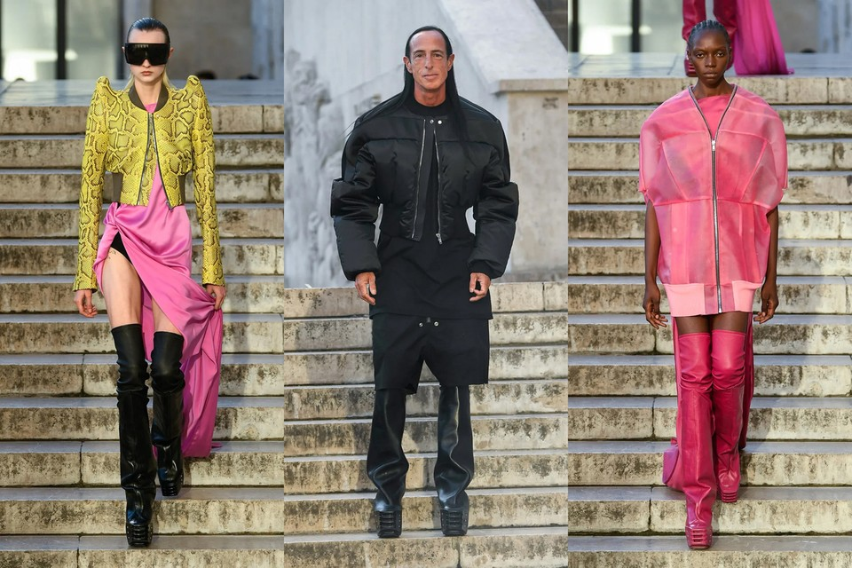
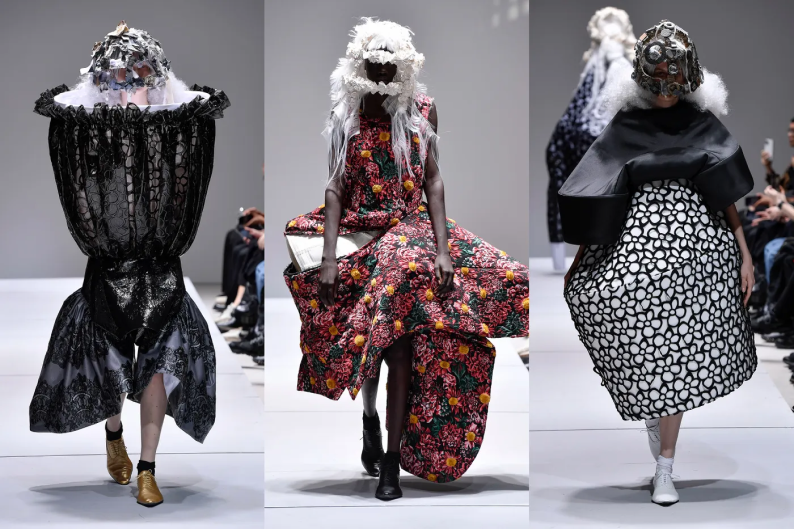
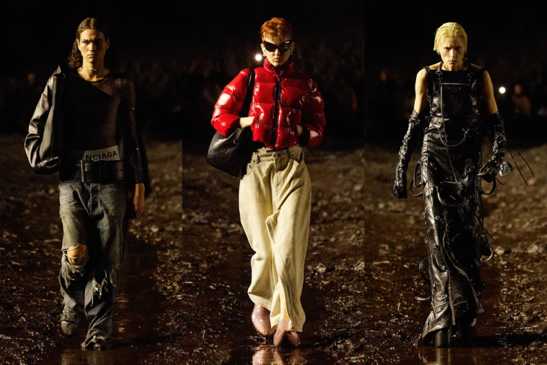

October 29 2022
Rick Owens once again held his Paris Fashion Week show at the Palais de Tokyo, a venue that consistently contrasts his collections. The white marble adorned with carved flowers and tall monoliths strikes a poetic discourse betwen the gothic and dark looks from Owen’s collection. Rick Owens does not choose the obvious answer, despite having such cohesion in his work. A dark and foggy indoor space would surely be the obvious choice for Rick Owen’s dark collection. This isnt to say that Rick avoids these ideas. A scented and eerie smog did roll through the open halls of Palais de Tokyo - the scent coming from Owen’s new collaboration with Aesop. In the past, Owens has created tall wooden structures that he proceeds to light aflame as models walk by. This year it was water. A fifty foot jet of water shot into the air as the Palais de Tokyo fountain misted guests including Machine Gun Kelly, Erykah Badu, Cher, Michèle Lamy, and Tyga. In fashion, the FROW is the row of seats closest to the catwalk - the most desirable and prestigious place to sit. This year, celebrities and fashion icons were subject to the fountains blast. The runway was soaked as models walked wearing gladiator thigh high boots strided through.
Rick Owens is from San Joaquin Valley California. He moved to Los Angeles to study art at Otis Art Institute of Parsons School of Design.
“I wanted to be an artist at the beginning, but then I didn’t think I had it in me. I didn’t think I had the intellectual stamina for it, so I decided to be a fashion designer, because that was frivolous and easy.”
Rick’s ease in speaking so nonchalantly tells how his talent for design is true. Rick broke into the scene as the boyfriend of Michèle Lamy who owned a celebrity frequented cafe in Los Angeles. Initially, Lamy hired Rick to work on tailoring for her luxury inspired clothing brand, ‘Lamy’. Rick and Lamy love dark and dystopic looks, often working with leather and futuristic plastic.

This show, Rick Owens iterated on forms spurring from the models shoulders, as fur and metal rose up to give the models an ominous strength. Deep ‘V’ neck cuts are another staple of Ricks’ that has become synonymous in the fashion world with his work. Owens contonued to wow the audience with intricate tulle ballgowns whose darkness was adorned with accents of red and pink.
Rick Owens is an expressive and truly unique designer who has been innovating greatly for the past decade. We are living in a renaissance period for dark looks, led by Rick and Lamy. Paris Fashion Week was another strong show under Ricks already long list of recent success.
October 24 2022
In her first show in Paris since 2020, Rei Kawabuko showcased a masterful collection. Rei Kawabuko is the founder and lead designer for Comme De Garçons. At 80 years of age, she has a long legacy of incredible work behind her. Still, Rei continues to innovate in form and shape upon the human body. Of many innovative fashion houses hosting shows this week, Kawabuko’s haute coture for Comme De Garçons is strikingly more inspired and new. Kawabuko’s approach to blending distinct and sculpture like forms toward cohesive and dynamic forms sets her work apart from her peers and even the human shape.
Backstage greeting guests, Rei Kawabuko wore a long black coat and bright white sneakers. Francesco Risso, the head designer of Italian luxury fashion house Marni, stood out front. Risso told a reporter,

“You know, I loved how proud it was. I kept thinking, This is really against the body, and, yes, fuck it. This is really free. And the respect for it and the workmanship.”
Among 18 of the pieces that Rei Kawabuko showcased, none bore the silhouette of any human form. Kawabuko’s talent to continue to create dynamic forms for so many decades is truly the mark of a young mind and a generational talent. Initially gaining attention in the early ‘80s for her deconstructivist pattern making, Rei has always been innovating. Her technique to tailoring inside out, slashing fabric, and flipping the seams was supported by master level stitching and design. It was through this early break-though that Kawabuko took the fashion world’s attention and birthed deconstruction as a fashion movement. It seems as though she truly exudes this talent of hers in all aspects of life, as she is also the founder many successful businesses that have become critically important pillars of the modern fashion world. In 2004 Rei Kawabuko held a brief store-font in Japan which she called a ‘guerilla’ store. This would later inspire what we now know as pop up stores. Later, she would go on to be the founder of New York’s greatest fashion retailer and supplier, Dover Street Market. In stores, Dover Street Market is often considered as an art show host by their fantastic and disruptive methods to display the clothing on sale.
In 2019 in an interview with The Cut, Rei told the reporter, “I want to make clothes one must think about, search for, sympathize with, and struggle to wear.”. Perphaps the pursuit of making challenging clothing and Rei’s ability to continually succeed at her challenges is what sharpens her mind. Kawabuko is continually improving and in the next decade we are likely to be continually amazed and surprised beyond the fashion world’s already high bar for Rei Kawabuko’s work.
October 21 2022
On October 3rd, Balenciaga made a splash in the mud for Paris Fashion Week 2023. This year, Balenciaga drew widespread attention for a variety of reasons unrelated to their ready to wear collection. Just days earlier, Kanye West premiered a collection for YZY that garnered media attention largely on account of a series of shirts that read ‘WHITE LIVES MATTER’. The shirts accompanied by cellphone videos of a frontstage emotional rant by Kanye West made twitter and journalists jump on the story. Kanye would go on to walk first in the muddy dugout of the Balenciaga show on the following day.
During his rant, Kanye cited how difficult it was to find a space to host the collection and show without the help of a major fashion house or LVMH. Moët Hennessy Louis Vuitton, commonly known as LVMH, is a French multinational holding corporation and business conglomerate that owns 75 distinguished fashion houses. Headquartered in Paris, LVMH lists Louis Vuitton, Dior, Sephora, Tiffany & Co., Fendi, and more. Conversley, fellow Paris fashion conglomerate Kerning is the owner of Balenciaga, Bottega Veneta, Gucci, Alexander McQueen and Yves Saint Laurent. While Kanye displayed a full collection with YZY in addition to hosting a live sunday service performance, the space he selected was small and somewhat more intimate. This close quarters space may have helped drive home the fear in audiences hearts when Kanye began ranting while wearing his racially insensitive shirt.

As Kanye walked through the massive mud field to kick off Balenciaga’s show, the difference between Kanye and classically trained creative director Demna was clear. Demna Gvasalia is the creative director of Balenciaga and co-founder of Vetements. The Balenciaga set was the work of Spanish artist Santiago Sierra, who created a similar installation called “House in Mud” in Germany in 2015. Backstage a reporter caught Demna for comment. Demna stated, It’s blasphemous to put a €1,000 shoe into a mud pool.” Or, for that matter, leather garments and evening gowns.” Certainly, the blasphemy rung true with an audience beyond fashion as images from the Balenciaga show were trending on the wider web of twitter and major news outlets.